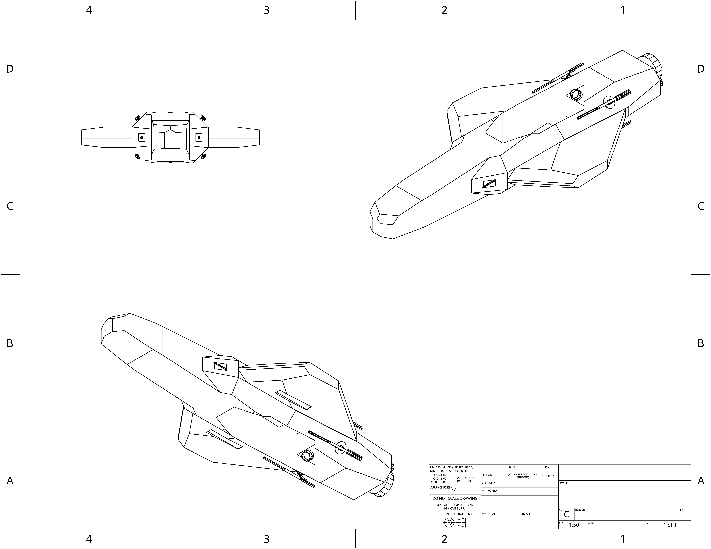

home
ECC Swordfish:
Multirole combat drone armed with CLG autocannons, gimbled gauss turrets and internally stored hyper-velocity
missiles. Existing a variety of configurations to include improved stealth or payload variants, it also possesses
superior atmospheric performance compared to its UCSC counterparts.

- Main armament: ECC 120mm HVAP munitions
- Secondary armerment: Quad ECC 20mm Gauss repeater
- Secondary armerment:Dual 20mm CLG repeater
- Shielding capabilities: X0.25 GiggaJoules
- Auxillary capabilities: Intergrated Electronic warfare arrays
- Armor(Hull): Front-60mm,Sides-30mm,Back-30mm
- Speed(In Atmosphere): 3974 Kph Forward 100 Kph Back
- Tonnage: 12 Metric tons